¡Un consejo importante para tu aprendizaje!
La práctica constante es tu mejor aliada para aprender japonés. ¡Mantén la motivación y sé constante, y verás cómo tu japonés mejora día a día!
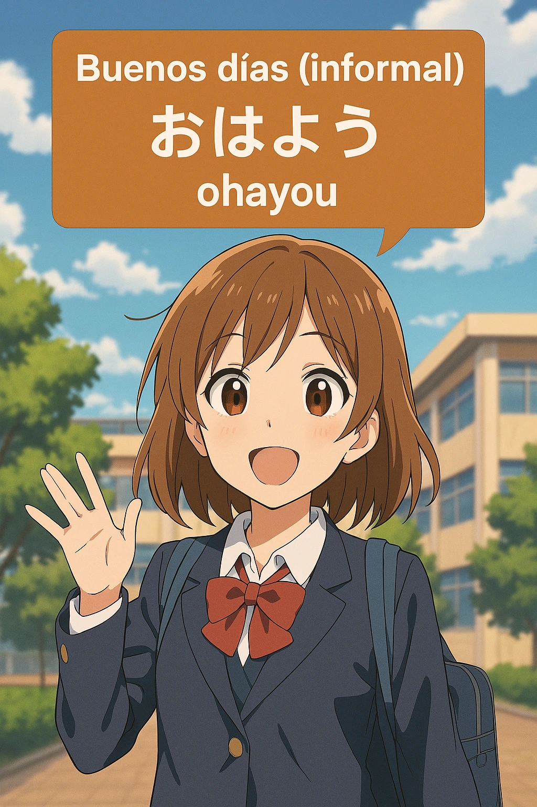


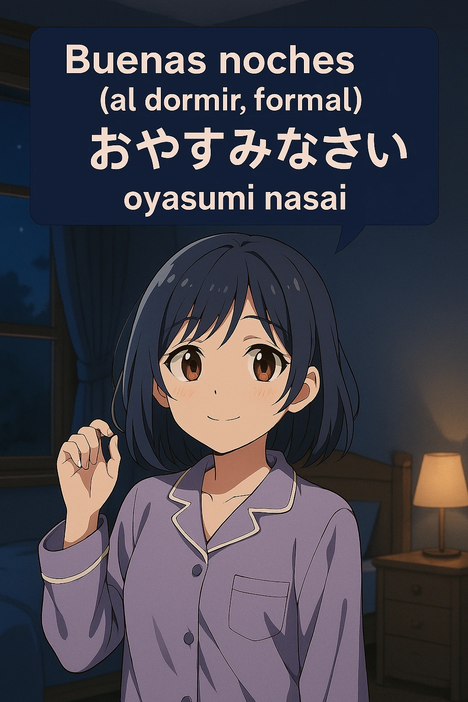
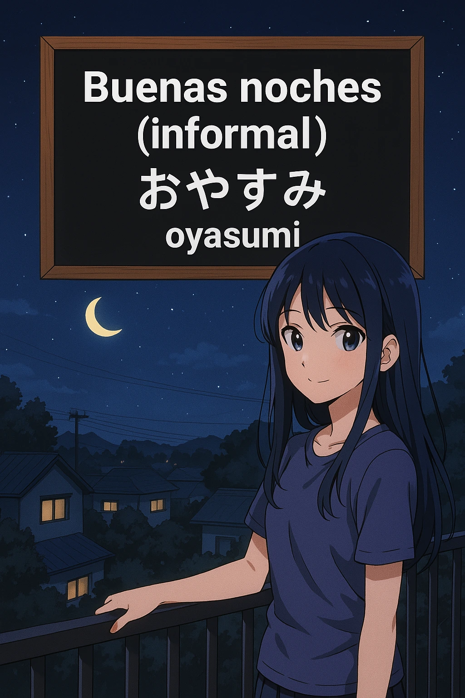
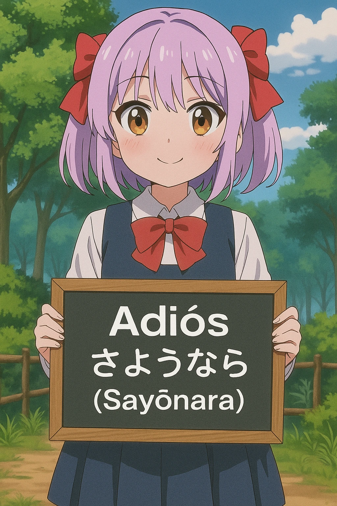
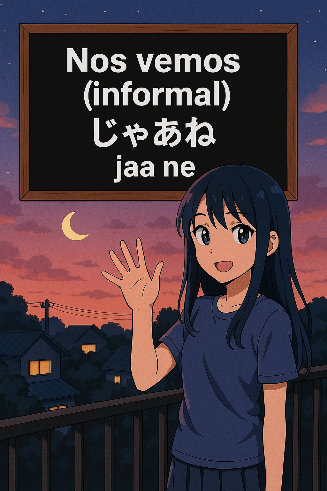

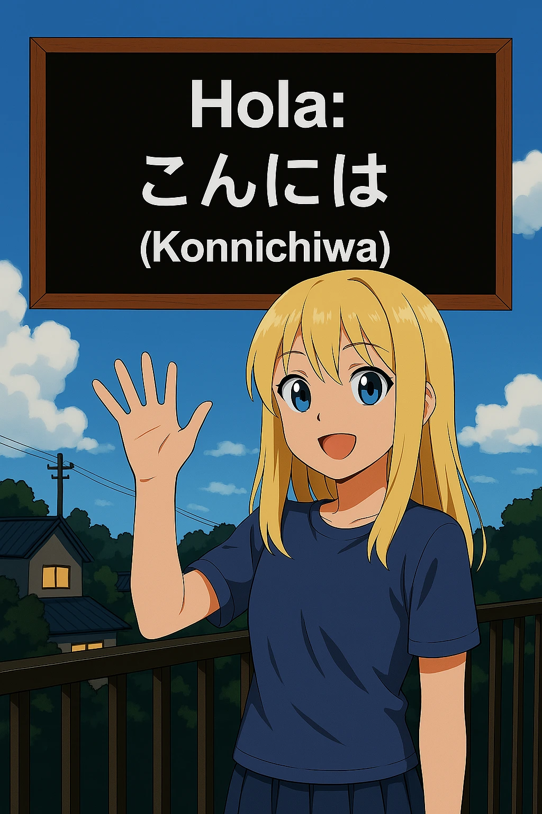


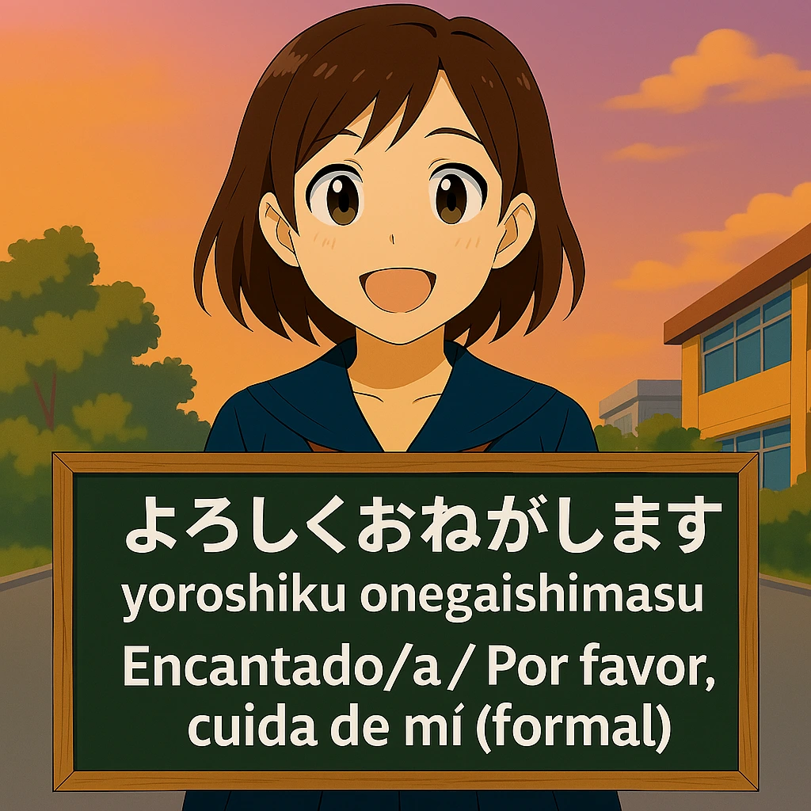
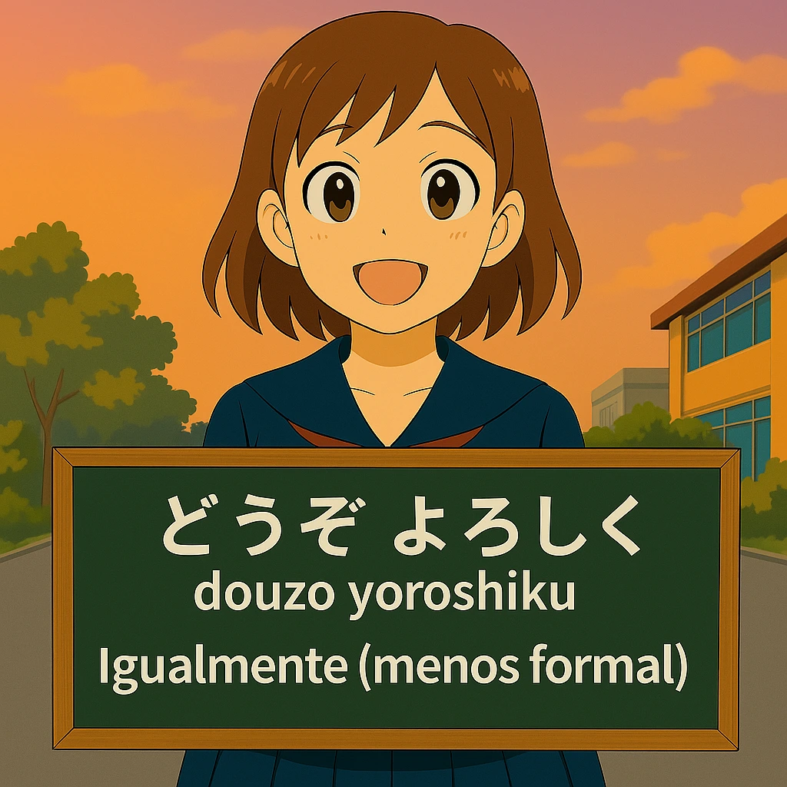


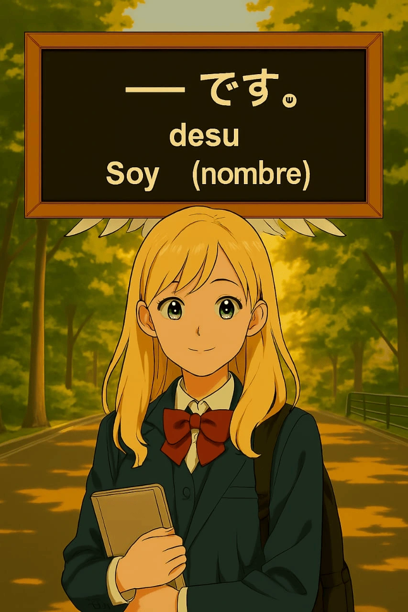
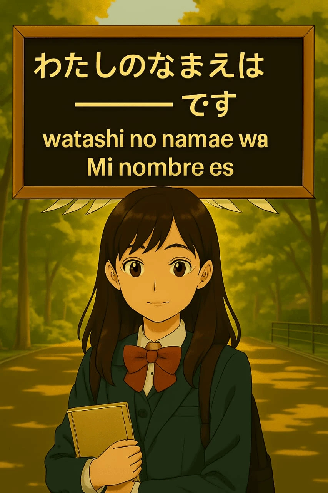

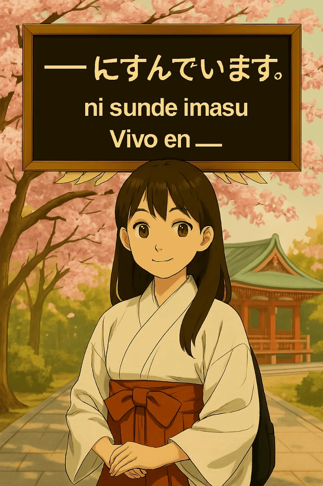
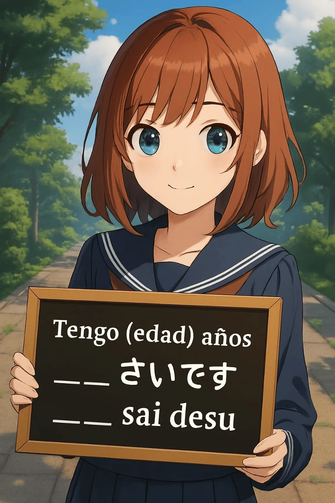